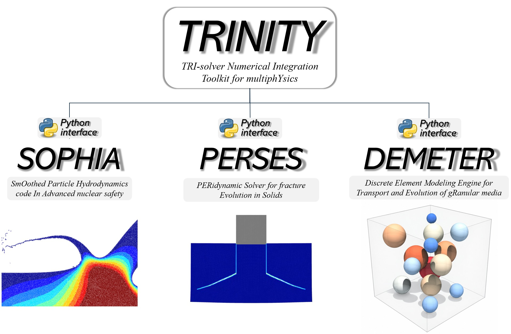

SOPHIA
SmOothed Particle Hydrodynamics code In Advanced nuclear safety
Multiphase flow, free surfaces, heat transfer, melting and solidification, and nuclear thermal-hydraulics.
02 · High-Fidelity Analysis
Detailed analysis of complex local phenomena using particle-based methods and high-performance computing.
MONAMI Lab develops particle-based, high-fidelity computational methods for complex flows, heat transfer, granular behavior, and solid fracture that cannot be resolved adequately by system-level or low-dimensional models.
Using GPU-parallel computation, we analyze multiphase and free-surface flows, melting and solidification, fluid–structure interaction, granular transport, and crack propagation. The solvers can be used independently or coupled for a range of multiphysics applications.
TRI-solver Numerical Integration Toolkit for multiphYsics

TRINITY integrates SPH, DEM, and Peridynamics solvers for high-fidelity analysis of coupled fluid, thermal, granular, structural, and fracture phenomena.
Each solver supports CUDA C++ GPU parallelization and a Python interface. The solvers can operate independently, couple with one another, or connect to external simulation codes.
Technical foundations. SOPHIA is based on the SPH code developed at Seoul National University (Jo et al., 2019; Park et al., 2020). Subsequent SPH formulations and solution procedures developed for fluid-flow, heat-transfer, and high-density-ratio multiphase problems are presented in Yoo et al., IJNME and Yoo et al., JCP. DEMETER (SOPHIA-DEM) is based on the original SOPHIA-DEM developed at Seoul National University (Jo et al., 2022) and was modularized at MONAMI Lab as an independent solver inheriting SOPHIA's CUDA-parallel architecture. PERSES (SOPHIA-PD) implements the peridynamic formulation presented by Yoo and Kim (2025) within the same GPU-parallel architecture and interface design. All three solvers are being continuously improved and extended at MONAMI Lab.
SmOothed Particle Hydrodynamics code In Advanced nuclear safety
Multiphase flow, free surfaces, heat transfer, melting and solidification, and nuclear thermal-hydraulics.
Discrete Element Modeling Engine for Transport and Evolution of gRanular media
Granular transport, particle contact and collision, and fluid–particle interaction.
PERidynamic Solver for fracture Evolution in Solids
Elastic deformation, damage initiation, crack growth, and solid fracture.
TRINITY는 SPH, DEM 및 Peridynamics 해석기를 통합하여 유체, 열, 입상체, 구조 및 파괴 현상을 정밀하게 분석하는 GPU 기반 다물리 수치해석 툴킷입니다.
각 해석기는 CUDA C++ 기반 GPU 병렬계산과 Python 인터페이스를 지원합니다. 독립적인 해석뿐 아니라 TRINITY 내부의 상호 연계 및 외부 해석 코드와의 결합도 가능합니다.
기술적 기반. SOPHIA는 서울대학교에서 개발된 SPH 코드(Jo et al., 2019; Park et al., 2020)를 기반으로 합니다. 이후 유동·열전달 및 고밀도비 다상유동 해석을 위해 개발된 SPH 수치 정식화와 해법은 Yoo et al., IJNME와 Yoo et al., JCP에 제시되어 있습니다. DEMETER(SOPHIA-DEM)는 서울대학교에서 개발된 기존 SOPHIA-DEM(Jo et al., 2022)을 기반으로 하며, MONAMI Lab에서 SOPHIA의 CUDA 병렬 구조를 계승하는 독립 해석 모듈로 재구성하였습니다. PERSES(SOPHIA-PD)는 Yoo and Kim (2025)에 제시된 Peridynamics 해석 체계를 동일한 GPU 병렬 구조와 인터페이스 설계 위에 구현한 모듈입니다. 세 해석기 모두 MONAMI Lab에서 지속적으로 개선·확장하고 있습니다.
SmOothed Particle Hydrodynamics code In Advanced nuclear safety
다상유동, 자유표면, 열전달, 용융·응고 및 원자력 열수력 해석.
Discrete Element Modeling Engine for Transport and Evolution of gRanular media
입상체 이동, 입자 접촉과 충돌 및 유체–입자 상호작용 해석.
PERidynamic Solver for fracture Evolution in Solids
탄성 변형, 손상 발생, 균열 성장 및 고체 파괴 해석.